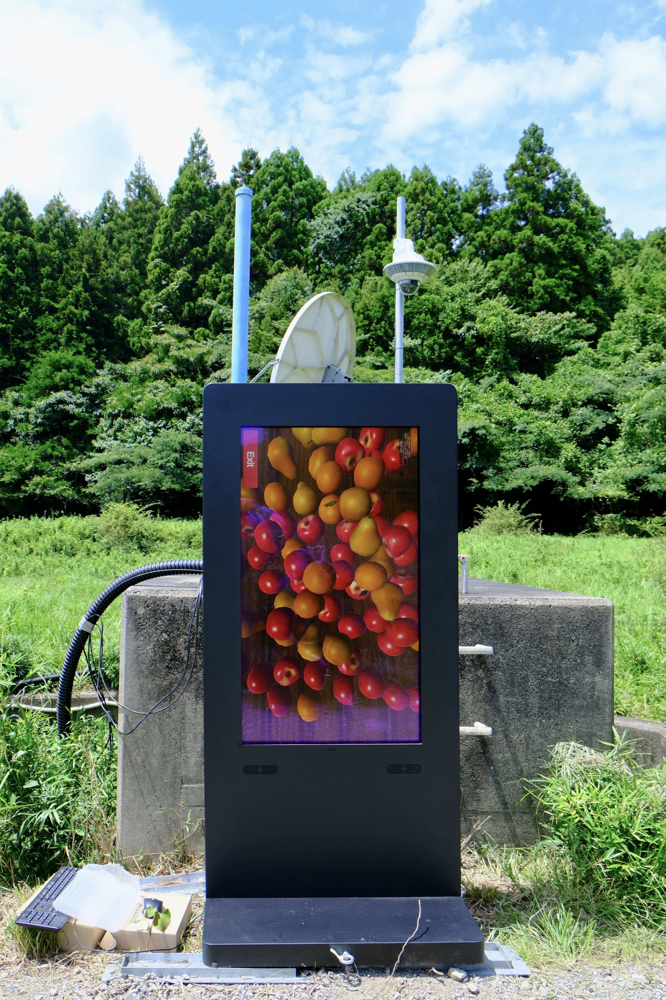
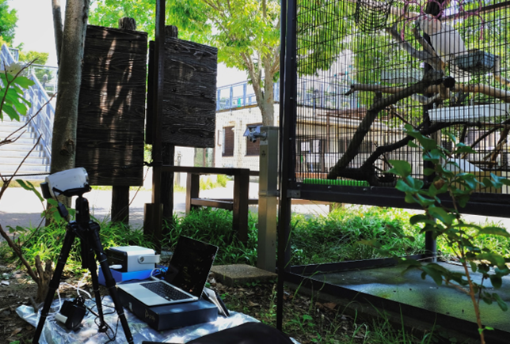
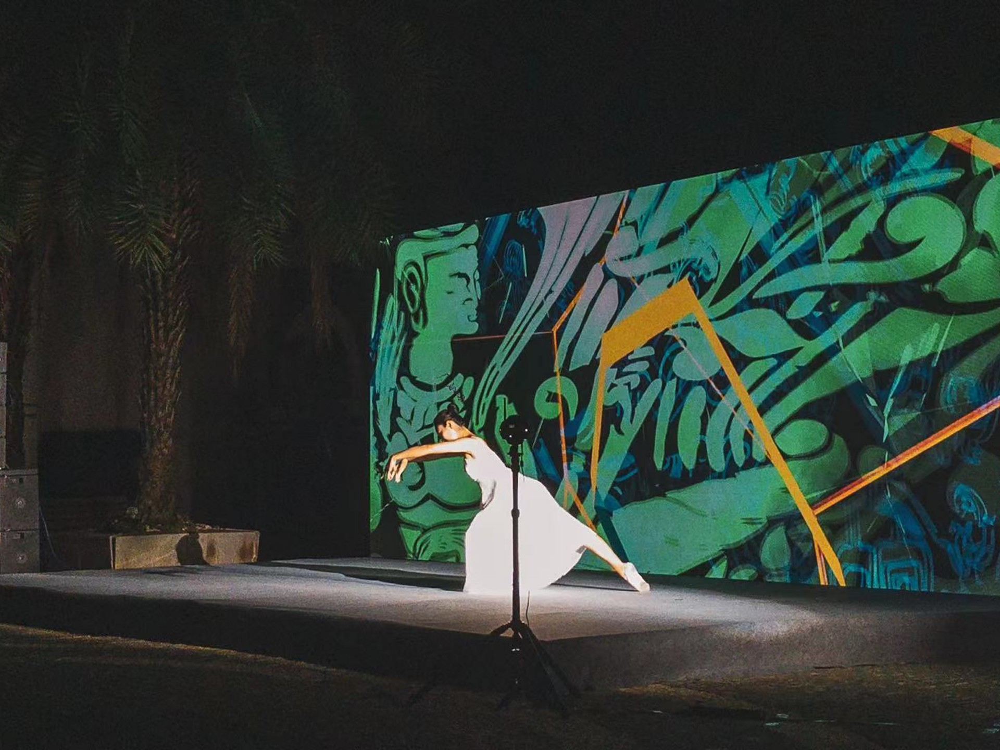
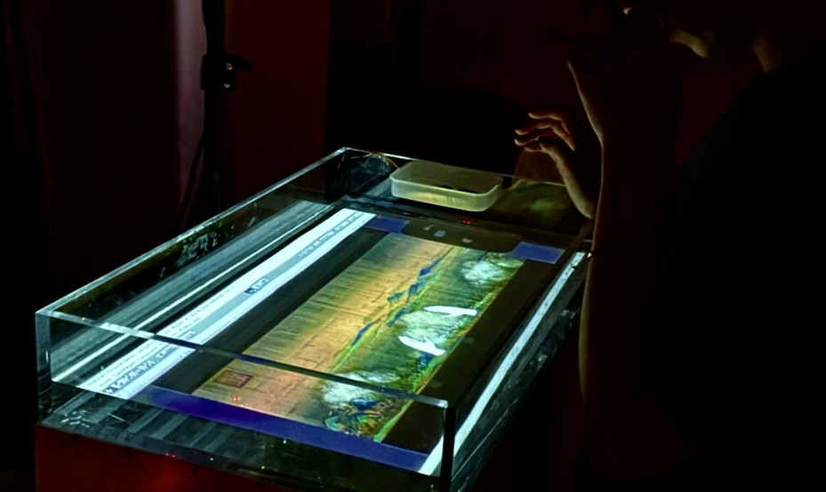
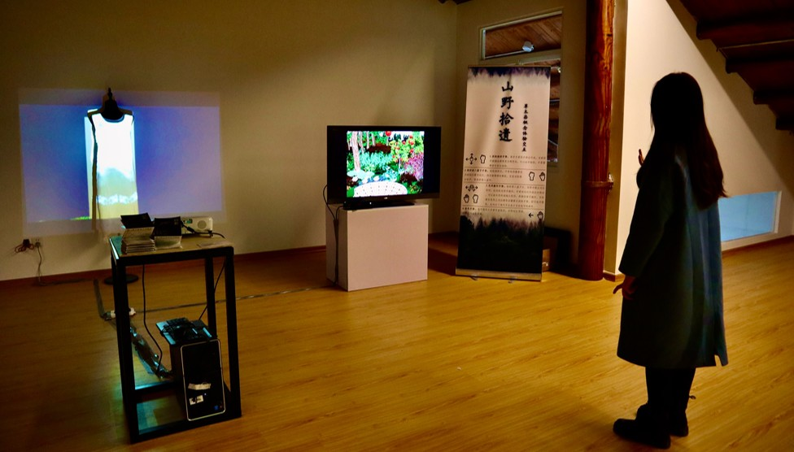

Hi! I'm Haoran.
I conduct research on interaction technologies with the aim of creating new relationships between people, animals, and the natural environment by combining IoT technologies and digital art.
Keywords: Animal-Computer Interaction; Digital Art; Internet of Things
Experiences
2024/09 Internship Engineer
Interactive Team,
teamlab
2023/10- PhD course
Department of Socio-Cultural Environmental Studies,
Graduate School of Frontier Sciences, The University of Tokyo
2021/10-2023/09 Master course
Department of Socio-Cultural Environmental Studies,
Graduate School of Frontier Sciences, The University of Tokyo
2017/08-2021/07 Undergraduate
Department of Digtal Media Technology,
School of Informatics, Xiamen University
Research
Topics
・Extinction of Experience
・Experience of Nature
・Human-Wildlife Conflicts
・Environmental Monitoring
Publications
H. Hong, Z. Sui, L. Uesaka, H. Kudo, H. H. Kobayashi. (2025)
"Exploring the Cockatoo's Engagement with Audiovisual Stimuli: An Inclusive Avian-IoT Interaction Design",
In Proceedings of the International Conference on Animal-Computer Interaction, (ACI '25). Association for Computing Machinery, New York, NY, USA, (Accepted).
H. Hong, D. Shimotoku, J. Kawase, H. H. Kobayashi. (2025)
"Smart Interactive IoT for Post Nuclear Disaster Landscapes: Towards Sustainable Human-Wildlife Coexistence",
2025 IEEE 13th Region 10 Humanitarian Technology Conference (R10-HTC), (Accepted)
Z. Sui, H. Hong, D. Shimotoku, H. H. Kobayashi. (2024)
"catAction: Deep learning for enhancing emotional cat-human interactions through the posture-based determination of the degrees of kittens' defensive and offensive aggressions",
In Proceedings of the International Conference on Animal-Computer Interaction (ACI '24). Association for Computing Machinery, New York, NY, USA, Article 5, 1-9.
doi: 10.1145/3702336.3702341
H. Hong, W. Lin, G. Li, H. H. Kobayashi, Y. She, Y. Chen, P. Xiao, Y. Fu, J. Lei. (2023)
"A Mixed Reality Transformation for Experiencing Plant Dyeing",
Ergonomics In Design, 77(77),
doi: 10.54941/ahfe1003426
W. Lin, H. Hong, Y. She, B. Yang. (2022)
"Landscape Rippling: Context-based water-mediated interaction design".
Computer Animation and Virtual Worlds, 33(3-4), e2064,
doi.org: 10.1002/cav.2064
Projects

CyBirdwood (Kyoto, Japan, 2023)

Time Prolongation (Xiamen, China, 2021)

Landscape Rippling (Xiamen, China, 2022)

Evergreen (Xiamen, China, 2020)
Others
Languages
Mandarins (Native)
English (TOEFL 99)
Japanese (N1 125)
Sports
Basketball
Snowboard
Fitness
PADI Open Water Diver (2024)
Taekwondo Red-Black Belt (2019)
Contact
coconutslatte.h[at]gmail.com